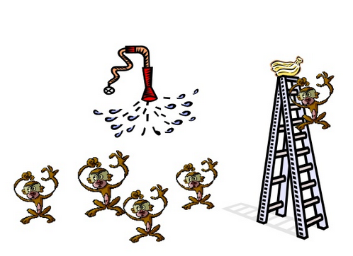

La Paradoja de Teseo y otras ideas sobre los cambios
“El barco en el cual volvieron (desde Creta) Teseo y los jóvenes de Atenas tenía treinta remos, y los atenienses lo conservaban desde la época de Demetrio de Falero, ya que retiraban las tablas estropeadas y las reemplazaban por unas nuevas y más resistentes, de modo que este barco se había convertido en un ejemplo entre los filósofos sobre la identidad de las cosas que crecen; un grupo defendía que el barco continuaba siendo el mismo, mientras el otro aseguraba que no lo era.”
– Plutarco, citado desde Wikipedia
Dejen que las instituciones funcionen, es casi un lugar común en la política chilena, una frase que se sostiene en la idea de la perpetuidad y continuidad de las mismas, “las personas cambian, las instituciones quedan”.
En uno de sus viajes el escritor inglés Douglas Adams visita el Golden Pavilion en Kioto, Japón, y relata la siguiente anécdota:
“Yo recuerdo que una vez en Japón, fui de visita al Gold Pavilion Temple en Kyoto y me sorprendí al observar lo bien que el templo había resistido el paso del tiempo desde que fuera construido en el siglo catorce.
Entonces me explicaron, que en realidad el edificio no había resistido, ya que de hecho se había quemado hasta los cimientos dos veces durante este siglo. Por lo que le pregunté a mi guía japonés “¿O sea que no es el edificio original?”.
“Al contrario, por supuesto que es el original”, me contestó, un tanto sorprendido por mi pregunta.
“¿Pero no se incendió?”.
“Sí”.
“Dos veces”.
“Muchas veces”.
“Y fue reconstruido”.
“Por supuesto. Es un edificio histórico importante”.
“Con materiales completamente nuevos”.
“Por supuesto. ¡Si se había incendiado!”.
“Pero entonces, ¿cómo es posible que sea el mismo edificio?”
“Siempre es el mismo edificio.”
Entonces, la pregunta es si los elementos cambian gradualmente, uno por uno, ¿cómo se mantiene la unidad, o la identidad de la institución?
Aristóteles trata de resolver la paradoja alegando que hay cuatros
causas o razones que describen una cosa.
Está la Causa Formal, o el diseño de la cosa, mientras que la Causa
Materiasl es la materia de la que están hechas las cosas.
El Barco de Teseo, o el Golden Pavillion pueden ser descritos como la
misma cosa debido a la causa formal, o diseño, que no cambia, aunque
cambie el material usado para construirlos varíe con el tiempo. Del
mismo modo que un río tiene la misma causa formal, aunque la causa
material (el agua contenida en este) cambie en el tiempo.
Otra causa de Aristóteles es el fin, o Causa Final, es el propósito previsto de una cosa. El Barco de Teseo podría tener el mismo fin, transportar a Teseo, incluso pese a que su causa material pudiera cambiar con el tiempo. Por último está la Causa Eficiente que es como y por quien está hecha una cosa, por ejemplo, la forma en que los artesanos fabricaron y montaron alguna cosa. En el caso de El Barco de Teseo, los trabajadores que construyeron el barco en primer lugar podrían haber usado las mismas herramientas y técnicas para reemplazar los tablones en el barco.
Así que la respuesta de Aristóteles, nos lleva a concluir que la esencia de las instituciones no necesariamente reside en las personas, sino que en los procedimientos, en las formalidades, las reglas, las leyes que las norman. O el fin para el que fueron concebidas. O a veces puede ser por la simple costumbre.
Lo que me recuerda otra historia sobre unos monos:
En un experimento, un grupo de científicos metieron cinco simios en una habitación. En el centro de la misma ubicaron una escalera tipo tijera, como la que utilizan los pintores o carpinteros de obra. En lo alto y sobre la escalera colocaron unas bananas. Cuando uno de los monos ascendía por la escalera para acceder a las bananas, los científicos aplicaban al resto de monos un chorro de agua helada. Al cabo de un tiempo, los monos relacionaron el uso de la escalera y el chorro de agua fría, de modo que cuando uno de ellos se aventuraba a ascender en busca de una banana, el resto de monos se lo impedían con violencia. Al final, e incluso ante la tentación del alimento, ningún mono se atrevía a subir por la escalera.

En ese momento, los científicos extrajeron al azar a uno de los cinco monos iniciales y lo sustituyeron por uno nuevo en la habitación. El mono nuevo, naturalmente, trepó por la escalera en busca de las bananas. En cuanto los demás observaron sus intenciones, se abalanzaron sobre él y lo bajaron a golpes antes de que se descargara sobre ellos el chorro de agua fría. Después de repetirse la experiencia varias veces, el nuevo mono comprendió que era mejor para su integridad renunciar a ascender por la escalera.
Los investigadores sustituyeron otra vez a uno de los monos del grupo inicial. El mono que había sido sustituido participó con especial interés en las palizas al nuevo mono trepador.
Posteriormente se repitió el proceso con los monos restantes, hasta que llegó un momento en que todos los monos del experimento inicial habían sido sustituidos.
En ese momento, quienes realizaban la investigación se sorprendieron con los resultados. Ninguno de los monos que había en la habitación había sido sometido alguna vez al chorro de agua fría. Sin embargo, ninguno se atrevía a trepar para hacerse con las codiciadas bananas.
Aunque no tengo claro si esta es una historia real o apócrifa, su lección es clara, y no pueden negar que refleja muchas veces lo que pasa en nuestras instituciones, u organizaciones. Lo mismo a una escala menor como nuestros equipos de trabajo. Cuantas veces pasa que alguien llega y no se le explica nada, pero se le pide que realice cierta labor de cierta manera, y en el fondo nadie sabe muy bien por qué. Como los monos de la historia, nadie se atrevió a experimentar el resultado de quebrantar la norma, o cuestionarla, nadie ni siquiera sabe que podría pasar, como los monos.
Dicen que si los maderos originales del barco de Teseo se hubiesen guardado en otro lugar, algún intrepido habría sido capaz de reconstruirlo, y podría haber clamado, con mucha razón de que era el poseedor del verdadero Barco de Teseo. Salvo, por el pequeño detalle que no contaba con Teseo y sus amigos. Pero eso es tema para otra reflexión posterior.